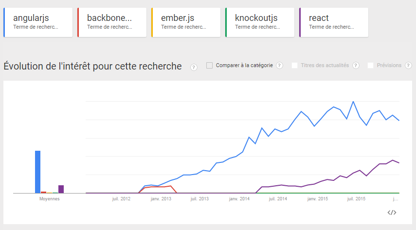
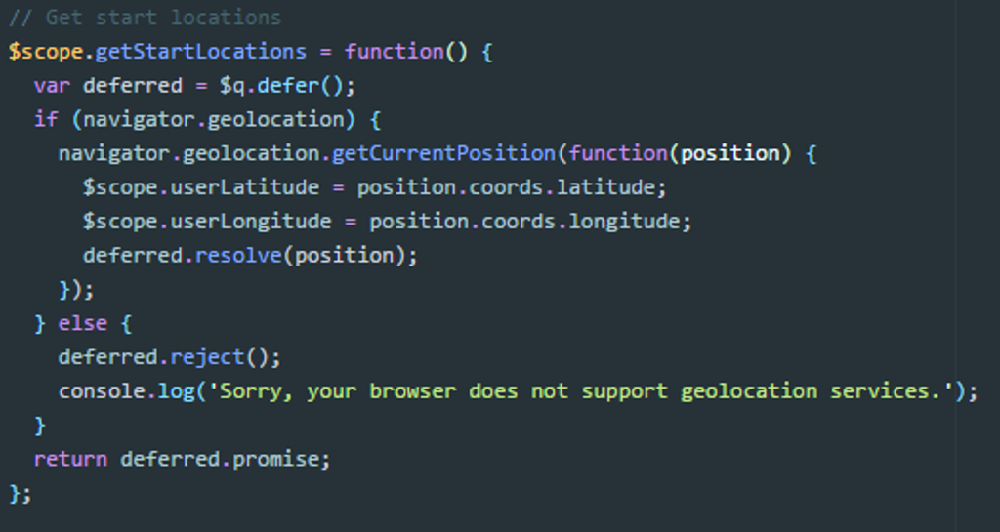
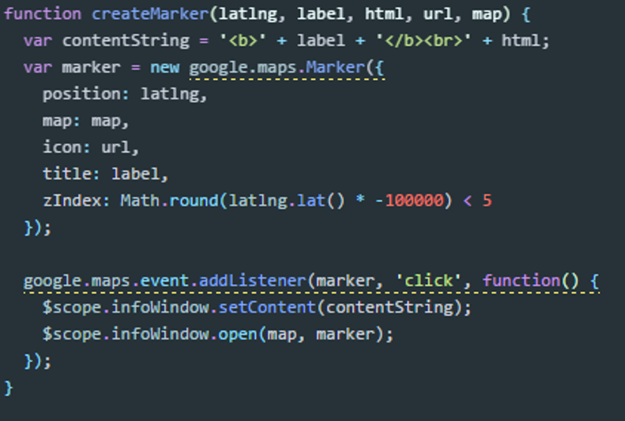
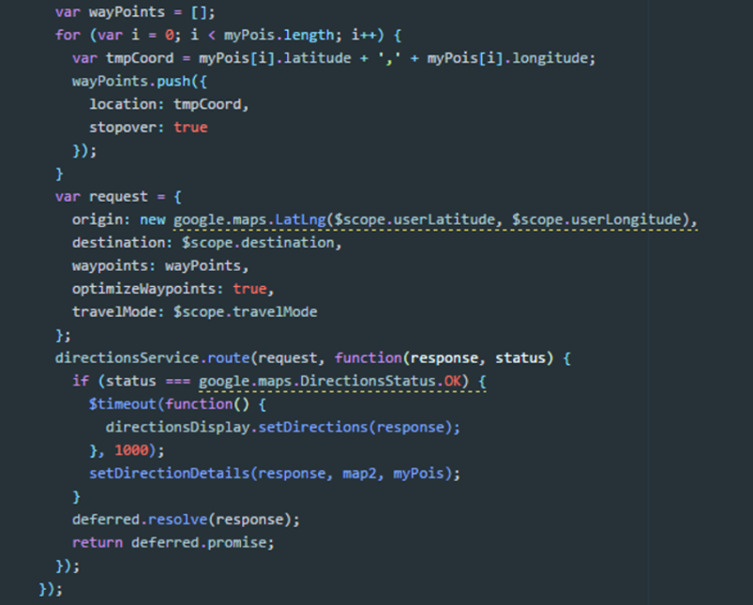

Angular JS
Superheroic Javascript MVW Framework
Angular JS
- Framework Javascript
- Développé par Google
- Pour faire des "SPA" (single page applications)
Tour d'horizon des frameworks Javascript majeurs
- Une multitude de framework existants. De nouveaux émergent régulièrement
- AngularJS (2012)
- Backbone.js (2013)
- React (créé par Facebook en 2013, v0.14)
- Meteor (2014)
- Ember.js (2013)
- ...
- Forte communauté autour d'Angular, grosse percée du framework
Une image vaut mieux qu'un long discours...

Quelques références notables
Les forces d'Angular en quelques points
- Two way data-binding MVVM
- Injection de dépendances
- Code cloisonné favorisant les TDD, TU et e2e
- Framework agnostique
- Templating HTML
Les points noirs
- Pas assez de cadrage et de règles
- Syntaxe parfois bizarre
- Encore un peu jeune (angular 2.0 arrive)
- SEO
Courbe d'apprentissage
- Opérationnel en 1 mois
- Il faut un peu plus de temps pour être "clean"
Pré-requis pour se mettre à Angular
- Une base de Javascript
- Mais surtout des concepts
- Injection de dépendances
- Architecture MVC / MV*
- Promesses et asynchronisme des requêtes
Hello World time!
Focus sur le two way data-binding et analogie avec jQueryCas d'exemple : on veut demander à l'utilisateur de saisir son nom et son prénom puis l'afficher à plusieurs endroits de la page
Live demo
Les principaux composants 1/3
- Contrôleur
- Manipulation des données
- Lié à une vue
- Vue
- Présentation du modèle
- Intéractions Utilisateur
- Notifie le contrôleur
- Filtre
Les principaux composants 2/3
Provider, Factory, Service
- Leur rôle
- Encapsulation
- Injection de dépendence
- Création d'objets
- Les Différences
- Syntaxe
- Configuration
- Retour
Les principaux composants 3/3
Directive
- Modifier ou transformer le DOM
- Réutilisation de code
- Exemples de directives natives :
- ngController;
- ngRepeat;
- ngModel
- ...
Let's code: Angular PhoneCat
Projet Alteca : l'appli Riviera
Riviera
- Le contexte
- Démo
- 'angular-google-maps' & autres modules
Map
<ui-gmap-google-map> </ui-gmap-google-map>
Géolocalisation
Marker
Service Direction
Angular 2

Angular 2
- Syntaxe différente
- TypeScript
- Modules tiers peu nombreux